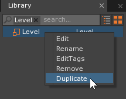
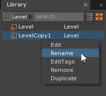

Spaces
This lesson covers the basics of Spaces and demonstrates how
they do and don’t interact with each other.
Learning Objectives
- To learn what
spacesare, and see how they can be used to control howcogscan interact with one another. - To become familiar with the different
componentsfound on aspace.
| Vocabulary | |||
|---|---|---|---|
Space |
TimeSpace |
GraphicsSpace |
PhysicsSpace |
SoundSpace |
ReactiveSpace |
||
What Are Spaces?
In the Zero Engine, a Space is a powerful organizational tool. It
is quite literally the world of your game. It has three spatial dimensions —
X, Y, and Z — and one temporal dimension — time — in which objects can
exist, move, rotate, collide, etc. Just about everything you do, make, or
interact with in a Zero project happens in a space.
Level Setup
CreateNewProject
When you make a level in the Zero Editor, you are basically
making a list of cogs (and their positions, rotations, etc.)
that the engine should create. These are made in the order they appear in the
Objects window, and placed in a space.
Let’s set up a demonstration using a couple of spheres.
- In the Objects Window
- In the Properties Window
- Remove the GravityEffect and DragEffect Components
- Command :
CreateSphereor - In the Properties Window
- Duplicate the object by pressing
Ctrl + D - In the Properties Window
{kind=link}
Now we’re ready to go, but before we do, let’s examine what we’ve done, and then make a hypothesis about what’s going to happen when we run the game.
- We have two spheres, each with
SphereColliderandRigidBodycomponents - The sphere on the left has an initial velocity that will send it to the right
- The
levelhas nogravitynordrag
Do you have an idea of what’s going to happen? Let’s run it and see.
{kind=link}
Naturally, the sphere on the left moved to the right and bumped into the other sphere, causing both of them to change their velocities.
Now let’s change things up a bit.
Multiple Spaces, Multiple Levels
The spheres in the previous example were able to collide because
- they both had
colliders - they were aligned on the Z axis
and, most importantly,
- they were both in the same
space
Now, let’s see what happens when we try to make two things collide that are in
different spaces. Creating additional
spaces is easy — it’s just one line of code — but a
space isn’t much good unless you load a
level in it. Thus, for our demonstration, we’re going to need
a couple more levels.
In the Library Window
Under the Level tag
Right-clickthe level calledLeveland select Duplicate
Right-clickthe level calledLevelCopy1and select Rename
Name this duplicate:
ForegroundRight-clickthe level calledLeveland select DuplicateRight-clickthe level calledLevelCopy1and select RenameName this duplicate:
Background
Now let’s work in our new Foreground level.
- In the Library Window
- Under the Level tag
Double left-clickthe level calledForeground
- Under the Level tag
As you might expect, Foreground is a perfect copy of our original
level. Let’s delete one of the spheres.
- Select the SphereB object
- Delete SphereB
Now let’s work in the Background level.
- In the Library Window
- Under the Level tag
Double left-clickthe level calledBackground
- Under the Level tag
Here, let’s delete the other sphere.
- Select the SphereA object
- Delete SphereA
Making Spaces
To create a new space, we’ll have to add a new Zilch script.
- Add a new ZilchScript resource named:
BackgroundCreator - Update your new script to look like this:
class BackgroundCreator : ZilchComponent
{
[Property]
// This is the level we'll load into the new space
var BackgroundLevel : Level = Level.Background;
[Property]
// This is the archetype of space we'll use
var SpaceArchetype : Archetype = Archetype.Space;
// This is the handle we can use from elsewhere to refer to the background space
var BackgroundSpace : Space;
function Initialize(init : CogInitializer)
{
// When the level starts, create the new space and load its level
this.BackgroundSpace = this.GameSession.CreateNamedSpace("Background", this.SpaceArchetype);
this.BackgroundSpace.LoadLevel(this.BackgroundLevel);
}
// When the foreground space is destroyed...
function Destroyed()
{
// ...if the background space is still around...
if(this.BackgroundSpace != null)
{
// ...destroy it
this.BackgroundSpace.Destroy();
}
}
}
A good place for a component like this is the
LevelSettings object. Since this component creates
the background space, we should attach it to the
foreground level, but before we do, let’s run that level
without the BackgroundCreator, so we have a basis for comparison with what it
will look like with it.
- In the Library Window
- Under the Level tag
Double left-clickthe level calledForeground
- Under the Level tag
- Save the project and run the game
{kind=link}
It’s just like before, except there’s only one sphere, and understandably so,
since the level only contains one sphere.
Now let’s add that component.
- In the Objects Window
- In the Properties Window
This new component we have added creates a new
space when the Foreground level
starts, and loads the Background level into it. Thus, we
should expect to see something like what we had before — two spheres, one of
them moving to the right.
{kind=link}
So where’s the other sphere?
As a matter of fact, it’s actually there — we just can’t see it because
there’s another space in the way. We can fix that by changing
some settings on the foreground level‘s
CameraViewport component.
- In the Objects Window
- In the Properties Window
- Under
CameraViewport- Set Background to:
False - Set Layer to:
1
- Set Background to:
- Under
- Save the project and run the game
{kind=link}
Always Set Your Layer Order
If you forget to change the CameraViewport‘s Layer property
when you change its Background property to False, you might notice
that it still seems to work. This may be the case, but it is important that
you always set the Layer order explicitly when you use multiple spaces,
as things are not guaranteed to work the way you might expect them to work
if you don’t.
The spheres now no longer collide. This is because, although
- they both have
collidersand - they are aligned on the Z axis,
most importantly,
- they are not in the same
space.
Layering
Observe the way that the foreground level‘s sphere is drawn
on top of the background sphere.
- Stop the Game
- In the Library Window
- Under the Level tag
Double left-clickthe level calledBackground
- Under the Level tag
- Select the SphereB object
- In the Properties Window
- Under
Transform- Set Translation to: [0, 1, 10]
- Under
Now the background sphere is much closer to the camera.
- In the Library Window
- Under the Level tag
Double left-clickthe level calledForeground
- Under the Level tag
Let’s also make the foreground sphere move a bit slower so we can see this better.
- Select the SphereA object
- In the Properties Window
- Under
RigidBody- Set Velocity to: [5, 0, 0]
- Under
- Save the project and run the game
{kind=link}
It seems that, even though the background sphere has a much greater
Z-translation than the foreground sphere, it is still being drawn behind it.
This is because, via the CameraViewport‘s Layer property, we
have specified that the spaces that these two spheres inhabit
should be drawn in this layer order, and now Z-ordering makes no difference.
Let’s change the layer order and watch what happens.
- In the Properties Window
- Under
CameraViewport- Set Layer to:
-1
- Set Layer to:
- Under
Now the background sphere should appear on top of the foreground sphere when they overlap.
Ah, we still need to fix the Background property.
- Stop the Game
- In the Library Window
- Under the Level tag
Double left-clickthe level calledBackground
- Under the Level tag
- In the Objects Window
- In the Properties Window
- Under
CameraViewport- Set Background to:
False
- Set Background to:
- Under
- In the Library Window
- Under the Level tag
Double left-clickthe level calledForeground
- Under the Level tag
- Save the project and run the game
{kind=link}
This is almost like before, except that the “background” sphere (it now seems improper to call it that) gets drawn on top of the “foreground” sphere.
Also note that the background color has changed from the default dark gray to a
lighter gray. What’s happening is that the backgrounds of both
spaces are transparent — neither CameraViewport
has its Background flag set — so we see right through the game to the
editor window behind it.
- Stop the Game
- In the Objects Window
- In the Properties Window
- Under
CameraViewport- Set Background to:
True
- Set Background to:
- Under
- Save the project and run the game
Now the background is once again being drawn with the color specified in the
ClearColor property of the LevelSettings object’s
ForwardRenderer component.
Space Components
Besides being an organizational tool where your game’s cogs
live, a space has a few important
components.
- In the Level Window
- Press
Shift + S
- Press
Or
- Select Menu
Let’s take a look at what we see in the Properties Window.
TimeSpaceGraphicsSpace- Contains certain properties defining how things are rendered
- To use custom
spritelayering, create aSpriteLayerOrderresourceand set theGraphicsSpaceto use it
PhysicsSpace- Contains certain properties defining how things interact with each other
- Can be used for ray casting, etc.
- If the Mode2D property is set to
True, then all collision resolution will be 2D — that is, it will result in no position changes in the Z-direction, etc. - To use a custom collision table, create a
CollisionTableresourceand set thePhysicsSpaceto use it
SoundSpace- Can be used to play
sound cues, etc.
- Can be used to play
ReactiveSpace
You can also add your own custom Zilch components to a
space — just select the space and click
Add Component... in the Properties Window, the same as with a
cog. Zilch components on the
Space are useful for keeping track of data across multiple levels,
like score, etc.
So What
We’ve learned how to make spaces. So why should we? What’s
the point? The primary usefulness of being able to put cogs in
separate spaces is in overlaying things.
Consider title screens, pause menus, HUDs, dialogue boxes, that sort of thing
— each of these can (and should) be placed in a separate
space from that of the main game. In general, no object from
your game should collide with anything in your HUD, for example, nor should
anything in your game get in front of your pause menu. You can strictly control
what goes where when you have these things separated into their own
spaces.
We’ll get into some of these more advanced applications of
spaces a bit later. For now, let’s move on to a much more
common use: creating objects, which we will cover in the next lesson.
Now we know how to use Spaces.